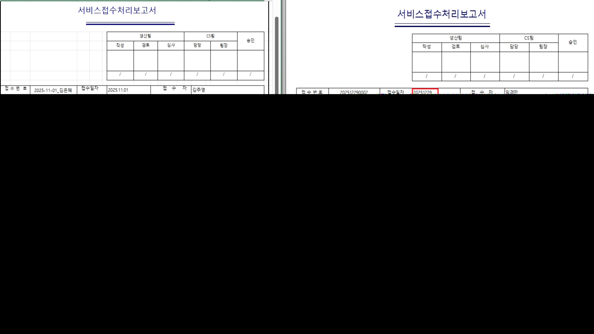

26.01.05 (수정) (출력물) (힘스)서비스접수처리보고서 출력물
- 출력물 점프 명칭을 HIMS보고서 로 변경해주세요. BPM보고서, BCA보고서, BPM보고서(지사), BCA보고서(지사), HIMS보고서 순으로 배치해주세요.
- 날짜형식 수정해주세요.
- OBF일 경우 /OBF 표기해주세요.
- 접수내역, 고장원인, 조치내역 좌측정렬해주세요.
- 조치내역에 항목별 비고 컬럼을 타이틀,구분선 없이 조회해주세요. (힘스)서비스접수처리보고서 고객 양식 확인.

출처: \<https://call.sysware.co.kr/Page/Open/99859/100101/0/18820244>